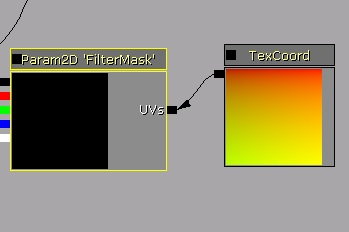
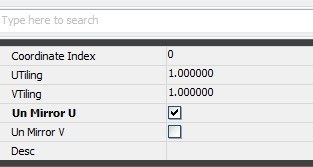

UDN
Search public documentation:
HitMask
日本語訳
中国翻译
한국어
Interested in the Unreal Engine?
Visit the Unreal Technology site.
Looking for jobs and company info?
Check out the Epic games site.
Questions about support via UDN?
Contact the UDN Staff
中国翻译
한국어
Interested in the Unreal Engine?
Visit the Unreal Technology site.
Looking for jobs and company info?
Check out the Epic games site.
Questions about support via UDN?
Contact the UDN Staff
Hit Mask Component
Overview
How to implement
Add Component to Actor
SceneCapture2DHitMaskComponent is the one responsible to render to texture. This component needs to attach to the pawn or skeletalmesh actor.
// Add hit mask to the actor
Begin Object Class=SceneCapture2DHitMaskComponent Name=HitMaskComp
End Object
HitMaskComponent=HitMaskComp
Components.Add(HitMaskComp)
Create a texture per Actor
Unless you want all characters to share same texture, you'd probably like to create texture and give that as render target for Hit Mask Component.
// Create Mask Texture of 64x64
MaskTexture = class'TextureRenderTarget2D'.static.Create(64, 64, PF_G8, MakeLinearColor(0, 0, 0, 1));
if ( MaskTexture!=none )
{
// Update HitMaskComponent with this texture
HitMaskComponent.SetCaptureTargetTexture( MaskTexture );
}
Add mask to the texture
This is to add one circle to the world location of MaskWorldLocation with size of Radius regardless normal test or not.HitMaskComponent.SetCaptureParameters(MaskWorldLocation, Radius, MaskStartLocation, FALSE); // send capture parameterMaskStartLocation isn't needed if you don't want any direction test to be done in shader. For example, if you'd like to create hit wounds on the character on the chest, you would not like to render mask behind of character where hit wouldn't have made although it's within the radius. MaskStartLocation indicates the origination point and last parameter TRUE will do hit normal test. If FALSE, the normal test won't be done and it will just create sphere around the world location. This is created to U unmirrored (V mirrored) since you don't want to create same thing in both places.
How to set it for your character
Texture Parameter
In your material, create texture parameter that can be replaced in game. That will be the target texture we're going to create.  Now you need to unmirror the texture. Since when we render it will unmirror U, make sure you do have texture sampling to Unmirror U as well. Replace texture parameter in code
Now time to set the mask texture to the parameter, so that
// get first parameter
MIC = Mesh.CreateAndSetMaterialInstanceConstant(0); // material you'd like to replace
if ( MIC != none && MaskTexture!=none )
{
// Set new texture as FilterMask parameter
MIC.SetTextureParameterValue('FilterMask', MaskTexture); // use this texture to be used by your material
}
Parameters
- MaterialIndex : Which material section to render?
- ForceLOD : If -1, use current LOD.
- HitMaskCullDistance : Cull distance. If further than this, it won't be tested
Fading related variable
You can have it fade out after a while. This is the tweak parameters.- FadingStartTimeSinceHit : Fading start time after last hit. By default 10 seconds. If -1, it's infinite. If continuous hit comes in, it will stop fade.
- FadingPercentage : % of color to apply - Range of 0 to 1
- FadingDurationTime : Fading duration time since fading starts - in second
- FadingIntervalTime : Fading interval - in second